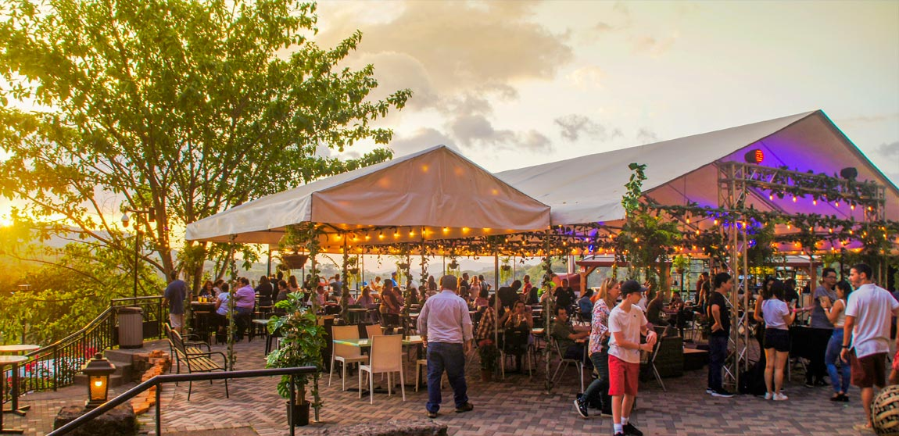

Bienvenido a mi página web. Mi nombre es Celeste Esquivel Rojas,
y en esta página encontrarás información sobre el Anfiteatro de Villa,
mi experiencia durante la gira educativa y muchos detalles sobre las cavernas
que pudimos observar en el lugar.
¿Que es el Anfiteatro de Villa?
Es un lugar turistico que cuenta con:
- Cavernas tematicas con tours guiados
- Jardines con miradores y esculturas
- Restaurantes en terrazas con vistas
La red de cavernas consta de 16 salones tematicos, distribuidos en 2 fases
Ubicación
Anfiteatro de Villa se encuentra ubicado a tan solo 15km de
San Jose ruta 27, salida a Ciudad Colon
¿Cómo reservar un tour?
Elige el tour de tu eleccion y compralo en linea
Reserva aqui
¿Realizan eventos privados?
Sí, se puede alquilar espacios dentro o fuera de las cavernas para:
- Bodas y cumpleaños
- Giras educativas
- Eventos corporativos
¡Y mucho más!
Puedes contactarlos al WhatsApp:
8403-4545

⠀⠀⠀⠀⠀⠀⠀⠀⠀⠀⠀⠀⠀⠀⠀⠀⠀⠀